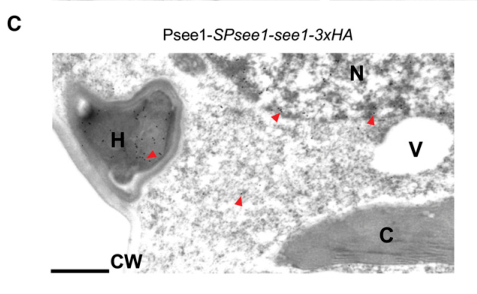

See1 (Seedling efficient effector 1; UMAG_02239) is a small (157-residue precursor) secreted effector protein of the maize smut fungus Ustilago maydis (Mycosarcoma maydis) with an N-terminal secretion signal and no recognised catalytic domain. It is strongly expressed during biotrophic growth in seedling leaves, is secreted by hyphae into the biotrophic interface and is translocated into maize cells, where it accumulates in the cytoplasm and prominently in the nucleus. Inside host cells See1 interacts with the maize co-chaperone SGT1 and interferes with MAPK-triggered phosphorylation of SGT1 at a monocot-specific threonine. See1 acts organ-specifically: it is required for the reactivation of DNA synthesis in differentiated maize leaf cells and for the growth of large vegetative leaf tumours, but is dispensable for tumour formation in tassel floral tissue, where host cells are already proliferating. The route from SGT1 phosphorylation to host cell-cycle re-entry, and any contribution to suppression of host immunity, remain unresolved.
| GO Term | Evidence | Action | Reason |
|---|---|---|---|
|
GO:0005576
extracellular region
|
EXP
PMID:25888589 A Secreted Effector Protein of Ustilago maydis Guides Maize ... |
ACCEPT |
Summary: Fungus-delivered See1-3xHA was detected by immunogold electron microscopy at the biotrophic interface surrounding intracellular hyphae, i.e. outside the fungal cell, before entry into maize cells.
Reason: Experimentally demonstrated secretion of a signal-peptide-bearing effector. The extracellular (interface) pool is a transit compartment rather than the site of action, but the location is correct.
Supporting Evidence:
PMID:25888589
See1-3xHA was detected in the fungal hyphae, at the biotrophic interface, in plant cytoplasm, and prominently inside plant cell nuclei
|
|
GO:0005576
extracellular region
|
IEA
GO_REF:0000044 |
ACCEPT |
Summary: Mapping of the UniProt subcellular location "Secreted", itself experimentally supported by Redkar et al. (2015).
Reason: Correct mapping, consistent with the experimental annotation.
Supporting Evidence:
PMID:25888589
only the two proteins with N-terminal secretion signals were found in the biotrophic interface
|
|
GO:0030430
host cell cytoplasm
|
EXP
PMID:25888589 A Secreted Effector Protein of Ustilago maydis Guides Maize ... |
ACCEPT |
Summary: See1 delivered by the fungus was detected in maize cytoplasm by immunogold TEM, while a secreted mCherry control remained at the interface; signal-peptide-less See1 also localized to maize cytoplasm after bombardment, and BiFC placed the See1-SGT1 interaction in the cytoplasm.
Reason: Direct localization of the natively delivered effector inside host cells; one of the two sites of action (with the host nucleus) where See1 meets SGT1.
Supporting Evidence:
PMID:25888589
Only See1-3xHA was quantitatively detected inside host cells, with ∼20% of particles localizing to maize nuclei
PMID:25888589
indicating an interaction of See1 and SGT1 in the cytoplasm and nucleus of maize cells
|
|
GO:0030430
host cell cytoplasm
|
IEA
GO_REF:0000044 |
ACCEPT |
Summary: Mapping of the UniProt location "Host cytoplasm", experimentally supported.
Reason: Correct mapping, consistent with the experimental annotation.
Supporting Evidence:
PMID:25888589
See1 22–157 -mCherry localized to both the maize cytoplasm and nuclei
|
|
GO:0042025
host cell nucleus
|
EXP
PMID:25888589 A Secreted Effector Protein of Ustilago maydis Guides Maize ... |
ACCEPT |
Summary: About 20% of immunogold particles of fungus-delivered See1-3xHA inside host cells were in maize nuclei; bombarded See1 also entered nuclei and BiFC showed nuclear See1-SGT1 complexes.
Reason: Direct, quantified localization of the natively delivered effector; host nucleus is a site of See1 action.
Supporting Evidence:
PMID:25888589
See1-3xHA was detected in the fungal hyphae, at the biotrophic interface, in plant cytoplasm, and prominently inside plant cell nuclei
|
|
GO:0042025
host cell nucleus
|
IEA
GO_REF:0000044 |
ACCEPT |
Summary: Mapping of the UniProt location "Host nucleus", experimentally supported.
Reason: Correct mapping, consistent with the experimental annotation.
Supporting Evidence:
PMID:25888589
Only See1-3xHA was quantitatively detected inside host cells, with ∼20% of particles localizing to maize nuclei
|
|
GO:0141017
effector-mediated induction of cell cycle reactivation in host
|
IDA
PMID:25888589 A Secreted Effector Protein of Ustilago maydis Guides Maize ... |
ACCEPT |
Summary: Leaves infected with a see1 deletion strain show a strong defect in host DNA synthesis (EdU incorporation in about 7% of colonized cells versus about 68% with the progenitor strain, and about 44% for an unrelated small-tumour mutant), and form only small leaf tumours; complementation restores virulence. Constitutive see1 expression increases tumour formation and EdU labelling in vegetative tassel-base tissue.
Reason: This is the core biological role of See1 and a symbiont-side effector process term (definition: a secreted symbiont molecule reactivates the host cell cycle, resulting in DNA synthesis and host cell division and contributing to vegetative tumour formation), which matches the experimental findings closely. Participation passes: See1 is itself delivered into the host cells whose DNA synthesis is reactivated and acts there on a host cell-cycle/immunity regulator (SGT1), rather than merely being required for fungal colonization; the Tin3 control argues against an indirect small-tumour effect. The precise downstream steps from SGT1 to cell-cycle re-entry are unresolved, but the term does not assert a mechanism.
Supporting Evidence:
PMID:25888589
See1 is required for the reactivation of plant DNA synthesis, which is crucial for tumor progression in leaf cells.
PMID:25888589
Quantification of EdU labeling showed that 67.5% ± 4.2% of the maize cells colonized by SG200 incorporated EdU at 4 DPI
PMID:25888589
maydis ip locus fully restored virulence, demonstrating functional complementation of see1
PMID:25888589
See1 interferes with the MAPK-triggered phosphorylation of maize SGT1 at a monocot-specific phosphorylation site.
|
Q: See1 binds SGT1 and prevents its MAPK-triggered Thr phosphorylation. Does See1 act by masking the phosphosite, by excluding the MAPK from SGT1, or by inhibiting the kinase? The answer would determine whether an informative molecular function term (e.g. a kinase or enzyme inhibitor/regulator activity) can replace the currently empty molecular function.
Q: The authors propose that See1 also dampens host immunity through SGT1. Is there direct evidence (e.g. altered defence gene expression or ROS in see1 mutants independent of tumour size) that would justify a symbiont-mediated suppression of host innate immunity annotation in addition to the cell-cycle term?
Experiment: Express phosphonull (T150A) and phosphomimic (T150D/E) ZmSGT1 variants in maize (or test them in planta during infection with wild-type and see1 deletion strains) to determine whether loss of SGT1 Thr phosphorylation is sufficient and necessary for See1-dependent leaf DNA synthesis.
Experiment: In vitro reconstitution with purified See1, ZmSGT1 and a maize MAPK (e.g. ZmMPK6) to test whether See1 directly inhibits SGT1 phosphorylation and to map the See1-binding region on SGT1.
The research report should be a detailed narrative explaining the function, biological processes, and localization of the gene product. Citations should be given for all claims.
You should prioritize authoritative reviews and primary scientific literature when conducting research. You can supplement
this with annotations you find in gene/protein databases, but these can be outdated or inaccurate.
We are specifically interested in the primary function of the gene - for enzymes, what reaction is catalyzed, and what is the substrate specificity? For transporters, what is the substrate? For structural proteins or adapters, what is the broader structural role? For signaling molecules, what is the role in the pathway.
We are interested in where in or outside the cell the gene product carries out its function.
We are also interested in the signaling or biochemical pathways in which the gene functions. We are less interested in broad pleiotropic effects, except where these elucidate the precise role.
Include evidence where possible. We are interested in both experimental evidence as well as inference from structure, evolution, or bioinformatic analysis. Precise studies should be prioritized over high-throughput, where available.
Identity verified. The Ustilago maydis study that established this gene explicitly identifies fungal locus um02239 as see1, encoding Seedling efficient effector 1. This matches the supplied UniProt annotation for Mycosarcoma maydis (synonym U. maydis); it is not a similarly named protein from another organism. See1 is a secreted, host-translocated virulence effector, not an experimentally established enzyme or transporter. Its best-supported function is to enable differentiated maize leaf cells to resume DNA synthesis and division, particularly during bundle-sheath-derived tumor hyperplasia. No catalytic reaction, substrate specificity, conserved See1 protein family, or characterized catalytic domain has been established. Experimental constructs encompass residues 22–157 after removal of the N-terminal secretion signal, consistent with a 157-residue precursor and a signal peptide in residues 1–21. The TPR, CS, and SGS domains sometimes discussed alongside See1 belong to its maize target SGT1, not to See1. (redkar2015asecretedeffector pages 1-2, redkar2015functionalcharacterizationof pages 61-64, villajuanabonequi2019celltypespecific pages 1-2, redkar2015asecretedeffector pages 8-10)
During infection, fungal hyphae secrete See1 into the biotrophic interface and deliver it into maize cytoplasm and nuclei. Immunogold electron microscopy of fungus-delivered, tagged See1 detected it in both host compartments; approximately 20% of the quantified particles were in maize nuclei. A secreted mCherry control accumulated at the interface without comparable entry into plant cells. The relevant site of See1 action is therefore inside the host cell, notwithstanding its initial secretion from the fungus. Movement into neighboring plant cells was observed after transient expression, but was not confirmed during natural delivery and may reflect overexpression. Figure 6C–D of the primary study provides localization and control images. (redkar2015asecretedeffector pages 6-8, redkar2015asecretedeffector media 2aaf5877, redkar2015asecretedeffector pages 12-14)
The strongest identified host interactor is ZmSGT1, a cochaperone associated with plant immune signaling and cell-cycle regulation. Yeast two-hybrid screening identified the interaction; co-immunoprecipitation in Nicotiana benthamiana and bimolecular fluorescence complementation in maize provided independent support, placing the association in both host cytoplasm and nuclei. In an experimental MAPK-activation system, phosphorylation of ZmSGT1 at Thr150 was detected without See1 but not when See1 was coexpressed. This residue lies in a variable region conserved among the examined monocot SGT1 proteins. By contrast, phosphorylation at Thr262 was constitutive and See1-independent. Purified tobacco SIPK could phosphorylate ZmSGT1 in vitro; the corresponding endogenous maize kinase has not been identified. The supported biochemical description is thus interference with MAPK-associated phosphorylation of a host regulatory protein, not direct phosphatase activity by See1. (redkar2015asecretedeffector pages 8-10, redkar2015asecretedeffector pages 10-12, redkar2015asecretedeffector pages 12-14)
The authors propose that altered SGT1 phosphorylation helps both to dampen defense signaling and to release the host cell-division program. These are not equally established endpoints: See1-dependent leaf DNA synthesis is directly measured, whereas the downstream biochemical route from SGT1 Thr150 to cell-cycle re-entry—and the extent of a direct See1-specific immune effect—remains unresolved. SGT1 phosphonull and phosphomimic variants caused only modest localization changes and did not establish a Thr150-dependent cell-cycle phenotype in yeast. The experiments therefore do not prove that SGT1 phosphorylation alone accounts for every See1-dependent tumor phenotype. (redkar2015asecretedeffector pages 10-12, redkar2015asecretedeffector pages 12-14, redkar2015asecretedeffector pages 14-15)
See1 acts most clearly in vegetative maize leaf tumor formation, where mature cells must be recruited into a proliferative program. At four days after infection, EdU incorporation—a measure of newly synthesized host DNA—occurred in 67.5 ± 4.2% of maize cells colonized by wild-type fungal strain SG200, versus 7.3 ± 1.7% in cells colonized by Δsee1. A different small-tumor mutant, Δtin3, still gave 44.22 ± 4.0% EdU-positive colonized cells; thus, the pronounced Δsee1 DNA-synthesis defect cannot simply be attributed to the presence of smaller tumors. Infection-associated expression of host DNA-replication and cell-cycle genes also depended strongly on See1. Cell-resolved studies distinguish bundle-sheath-derived hyperplasia—the division-associated tumor component promoted by See1—from mesophyll-derived hypertrophy, or cell enlargement. See1 should not be annotated as the demonstrated direct inducer of mesophyll hypertrophy. (redkar2015asecretedeffector pages 3-4, redkar2015asecretedeffector pages 4-6, villajuanabonequi2019celltypespecific pages 1-2, redkar2017insightsintohost pages 3-5)
Genetic tests reinforce this functional assignment. Δsee1 predominantly formed small 1–4 mm seedling-leaf tumors and rarely produced the >6–20 mm tumors more frequent in wild-type infections; heavy tumors were absent. Reintroducing see1 into the fungal genome restored leaf virulence. The mutant nevertheless initially colonized maize and caused largely normal tassel and ear tumors: See1 is important for a particular host developmental setting, not indispensable for all fungal infection. Its transcript abundance at the measured late stage was more than 50-fold higher in leaves than in floral organs. In already proliferating premeiotic anthers, roughly 60% of cells incorporated EdU regardless of infection or see1 deletion, consistent with See1 being unnecessary when host division is already active. Conversely, forced fungal expression of see1 increased abnormal tumors in the vegetative tassel base to approximately 38% of infected plants, versus 8% with wild-type fungus; this gain-of-function result concerns vegetative tissue, not anther tumors. (redkar2015asecretedeffector pages 2-3, redkar2015asecretedeffector pages 4-6, redkar2015asecretedeffector pages 6-8)
The findings and their principal inferential limits are summarized below.
| Finding | Direct observation | Interpretation and limitation | Source (year; DOI) |
|---|---|---|---|
| Identity and annotation | The fungal locus um02239/UMAG_02239 was renamed see1, encoding Seedling efficient effector 1; experimental constructs indicate a 157-aa precursor with an N-terminal secretion signal at residues 1–21. | Confirms the literature target corresponding to UniProt A0A0D1C8C8. No catalytic activity, conserved protein family, or experimentally validated See1 domain has been established. TPR, CS, and SGS are domains of host SGT1, not See1. | Redkar et al. (2015); 10.1105/tpc.114.131086 (redkar2015asecretedeffector pages 1-2, redkar2015functionalcharacterizationof pages 61-64) |
| Organ-specific virulence | Δsee1 produced predominantly small 1–4-mm seedling-leaf tumors, markedly fewer 6–20-mm tumors, and no heavy tumors. Tassel and ear tumors remained essentially normal. Reinsertion of see1 at the fungal ip locus fully restored leaf virulence. | Strong knockout-plus-rescue evidence that See1 is required primarily for vegetative leaf tumor expansion, not for general pathogenicity or floral-tissue infection. | Redkar et al. (2015); 10.1105/tpc.114.131086 (redkar2015asecretedeffector pages 2-3, redkar2015asecretedeffector pages 3-4) |
| Host DNA-synthesis reactivation | At 4 days post-infection, EdU was incorporated by 67.5 ± 4.2% of maize cells colonized by wild-type SG200 versus 7.3 ± 1.7% in Δsee1 infections. A separate small-tumor mutant, Δtin3, retained 44.22 ± 4.0% EdU-positive cells. | Demonstrates a See1-specific requirement for efficient re-entry of differentiated leaf cells into DNA synthesis; EdU establishes DNA replication but alone does not define every downstream cell-cycle step. | Redkar et al. (2015); 10.1105/tpc.114.131086 (redkar2015asecretedeffector pages 3-4, redkar2015asecretedeffector pages 4-6) |
| Host-cell localization | Naturally delivered See1–3×HA was detected in fungal hyphae, the biotrophic interface, maize cytoplasm, and nuclei; approximately 20% of quantified immunogold particles localized to host nuclei. Secreted mCherry remained at the interface rather than entering host cells. | Supports specific translocation into maize cytoplasm and nucleus. Apparent movement between neighboring cells occurred under transient overexpression but was not confirmed by immunogold microscopy and could be an artifact. | Redkar et al. (2015); 10.1105/tpc.114.131086 (redkar2015asecretedeffector pages 6-8, redkar2015asecretedeffector pages 12-14, redkar2015asecretedeffector media 2aaf5877) |
| Interaction with maize SGT1 | See1–ZmSGT1 association was detected by yeast two-hybrid screening and independently supported by co-immunoprecipitation in Nicotiana benthamiana and BiFC in maize; BiFC placed the interaction in cytoplasm and nucleus. | Convergent interaction evidence identifies SGT1 as the best-supported host target. These assays do not by themselves prove that all See1-dependent tumor phenotypes are mediated exclusively through SGT1. | Redkar et al. (2015); 10.1105/tpc.114.131086 (redkar2015asecretedeffector pages 8-10, redkar2015asecretedeffector pages 10-12) |
| Effect on SGT1 phosphorylation | In a heterologous N. benthamiana MEK2–SIPK activation system, ZmSGT1 Thr150 phosphorylation was detected without See1 but became undetectable when See1 was coexpressed. Constitutive phosphorylation at Thr262 was unaffected. Tobacco SIPK also phosphorylated ZmSGT1 in vitro. | Supports interference with MAPK-associated Thr150 phosphorylation. The endogenous maize kinase was not identified, direct enzymatic inhibition was not demonstrated, and phosphonull/phosphomimic tests did not establish that Thr150 controls SGT1’s cell-cycle function. Immune suppression therefore remains a proposed consequence, not a proven See1 phenotype. | Redkar et al. (2015); 10.1105/tpc.114.131086 (redkar2015asecretedeffector pages 8-10, redkar2015asecretedeffector pages 10-12, redkar2015asecretedeffector pages 12-14) |
| Vegetative-tissue gain-of-function | Constitutive see1 expression increased abnormal tumor formation in the vegetative tassel base to approximately 38% of infected plants versus 8% with wild type and increased local EdU labeling; it did not materially alter anther DNA synthesis. | Supports See1 activity in differentiated vegetative tissue rather than a universal capacity to stimulate division in every maize cell type. Overexpression is nonphysiological and cannot alone define the normal pathway. | Redkar et al. (2015); 10.1105/tpc.114.131086 (redkar2015asecretedeffector pages 6-8, redkar2015asecretedeffector pages 4-6) |
| Status of recent research | The 2023 hyperplasia study experimentally characterized Sts2/UMAG_05318, which enters the maize nucleus, interacts with ZmNECAP1, and functions as a transcriptional activator. See1 served only as prior-work context or an assay comparator. | Sts2 is a distinct effector and its results are not direct evidence for See1/UMAG_02239. The retrieved 2023–2024 literature adds tumorigenesis context but no major new direct See1 mechanism beyond the 2015 study. | Zuo et al. (2023); 10.1038/s41467-023-42522-w (zuo2023atranscriptionalactivator pages 2-4, zuo2023atranscriptionalactivator pages 1-2, zuo2023atranscriptionalactivator pages 4-6) |
Table: Evidence specific to fungal See1/UMAG_02239, separating direct observations from mechanistic interpretation and unresolved limitations. The table also prevents conflation with host SGT1 domains or the distinct effector Sts2.
Recent work refines the context rather than replacing the See1 mechanism. A 2023 review continues to identify See1 as a translocated, SGT1-associated effector that promotes seedling-leaf DNA synthesis. A separate October 2023 primary study demonstrated that Sts2 (UMAG_05318) also promotes maize hyperplasia, but through nuclear transcriptional activation and interaction with ZmNECAP1. Sts2 is not See1 (UMAG_02239); its experiments do not establish a See1–Sts2 interaction or a shared linear pathway. The retrieved 2024 material likewise recapitulates the See1–SGT1 model without demonstrating a new, direct See1-specific biochemical mechanism. Consequently, the detailed April 2015 primary study remains the principal direct experimental basis for annotating this protein. (yu2023progressinpathogenesis pages 4-5, zuo2023atranscriptionalactivator pages 1-2, zuo2023atranscriptionalactivator pages 4-6, lee2024characterizationofhypertrophyrelated pages 30-34)
The present real-world use of See1 is principally research, as a genetically tractable example of how a crop pathogen manipulates host developmental state. Fungal deletion, genetic complementation, inducible expression, host EdU labeling, interaction assays, phosphoproteomics, and microscopy have established it as a tool for investigating maize tumor formation and host-targeted effectors. Conservation of See1-like sequences across smut fungi does not establish equivalent activity: the U. hordei ortholog failed to complement the U. maydis see1 knockout in the reported comparison. The available evidence does not establish a deployed See1-based crop-control intervention or a validated structure-guided inhibitor. (redkar2015asecretedeffector pages 2-3, redkar2015asecretedeffector pages 3-4, redkar2015asecretedeffector pages 8-10, zuo2019molecularinteractionsbetween pages 8-10)
Key sources and publication dates: Redkar et al., The Plant Cell, April 2015, primary functional study, https://doi.org/10.1105/tpc.114.131086; Redkar et al., Frontiers in Plant Science, May 2017, developmental-context review, https://doi.org/10.3389/fpls.2017.00899; Villajuana-Bonequi et al., Scientific Reports, 2019, cell-type transcriptomics, https://doi.org/10.1038/s41598-019-46734-3; Zuo et al., Annual Review of Phytopathology, August 2019, authoritative smut-effector review, https://doi.org/10.1146/annurev-phyto-082718-100139; Yu et al., Molecular Plant Pathology, 2023, recent pathogenesis review, https://doi.org/10.1111/mpp.13307; Zuo et al., Nature Communications, October 2023, distinct Sts2 mechanism, https://doi.org/10.1038/s41467-023-42522-w. (redkar2015asecretedeffector pages 1-2, redkar2017insightsintohost pages 3-5, villajuanabonequi2019celltypespecific pages 1-2, zuo2019molecularinteractionsbetween pages 8-10, yu2023progressinpathogenesis pages 4-5, zuo2023atranscriptionalactivator pages 1-2)
References
(redkar2015asecretedeffector pages 1-2): Amey Redkar, Rafal Hoser, Lena Schilling, Bernd Zechmann, Magdalena Krzymowska, Virginia Walbot, and Gunther Doehlemann. A secreted effector protein of ustilago maydis guides maize leaf cells to form tumors. Plant Cell, 27:1332-1351, Apr 2015. URL: https://doi.org/10.1105/tpc.114.131086, doi:10.1105/tpc.114.131086. This article has 190 citations and is from a highest quality peer-reviewed journal.
(redkar2015functionalcharacterizationof pages 61-64): Amey Redkar. Functional characterization of an organ specific effector see1 of ustilago maydis. Text, Jan 2015. URL: https://doi.org/10.17192/z2015.0051, doi:10.17192/z2015.0051. This article has 3 citations and is from a peer-reviewed journal.
(villajuanabonequi2019celltypespecific pages 1-2): Mitzi Villajuana-Bonequi, Alexandra Matei, Corinna Ernst, Asis Hallab, Björn Usadel, and Gunther Doehlemann. Cell type specific transcriptional reprogramming of maize leaves during ustilago maydis induced tumor formation. Scientific Reports, Feb 2019. URL: https://doi.org/10.1038/s41598-019-46734-3, doi:10.1038/s41598-019-46734-3. This article has 34 citations and is from a peer-reviewed journal.
(redkar2015asecretedeffector pages 8-10): Amey Redkar, Rafal Hoser, Lena Schilling, Bernd Zechmann, Magdalena Krzymowska, Virginia Walbot, and Gunther Doehlemann. A secreted effector protein of ustilago maydis guides maize leaf cells to form tumors. Plant Cell, 27:1332-1351, Apr 2015. URL: https://doi.org/10.1105/tpc.114.131086, doi:10.1105/tpc.114.131086. This article has 190 citations and is from a highest quality peer-reviewed journal.
(redkar2015asecretedeffector pages 6-8): Amey Redkar, Rafal Hoser, Lena Schilling, Bernd Zechmann, Magdalena Krzymowska, Virginia Walbot, and Gunther Doehlemann. A secreted effector protein of ustilago maydis guides maize leaf cells to form tumors. Plant Cell, 27:1332-1351, Apr 2015. URL: https://doi.org/10.1105/tpc.114.131086, doi:10.1105/tpc.114.131086. This article has 190 citations and is from a highest quality peer-reviewed journal.
(redkar2015asecretedeffector media 2aaf5877): Amey Redkar, Rafal Hoser, Lena Schilling, Bernd Zechmann, Magdalena Krzymowska, Virginia Walbot, and Gunther Doehlemann. A secreted effector protein of ustilago maydis guides maize leaf cells to form tumors. Plant Cell, 27:1332-1351, Apr 2015. URL: https://doi.org/10.1105/tpc.114.131086, doi:10.1105/tpc.114.131086. This article has 190 citations and is from a highest quality peer-reviewed journal.
(redkar2015asecretedeffector pages 12-14): Amey Redkar, Rafal Hoser, Lena Schilling, Bernd Zechmann, Magdalena Krzymowska, Virginia Walbot, and Gunther Doehlemann. A secreted effector protein of ustilago maydis guides maize leaf cells to form tumors. Plant Cell, 27:1332-1351, Apr 2015. URL: https://doi.org/10.1105/tpc.114.131086, doi:10.1105/tpc.114.131086. This article has 190 citations and is from a highest quality peer-reviewed journal.
(redkar2015asecretedeffector pages 10-12): Amey Redkar, Rafal Hoser, Lena Schilling, Bernd Zechmann, Magdalena Krzymowska, Virginia Walbot, and Gunther Doehlemann. A secreted effector protein of ustilago maydis guides maize leaf cells to form tumors. Plant Cell, 27:1332-1351, Apr 2015. URL: https://doi.org/10.1105/tpc.114.131086, doi:10.1105/tpc.114.131086. This article has 190 citations and is from a highest quality peer-reviewed journal.
(redkar2015asecretedeffector pages 14-15): Amey Redkar, Rafal Hoser, Lena Schilling, Bernd Zechmann, Magdalena Krzymowska, Virginia Walbot, and Gunther Doehlemann. A secreted effector protein of ustilago maydis guides maize leaf cells to form tumors. Plant Cell, 27:1332-1351, Apr 2015. URL: https://doi.org/10.1105/tpc.114.131086, doi:10.1105/tpc.114.131086. This article has 190 citations and is from a highest quality peer-reviewed journal.
(redkar2015asecretedeffector pages 3-4): Amey Redkar, Rafal Hoser, Lena Schilling, Bernd Zechmann, Magdalena Krzymowska, Virginia Walbot, and Gunther Doehlemann. A secreted effector protein of ustilago maydis guides maize leaf cells to form tumors. Plant Cell, 27:1332-1351, Apr 2015. URL: https://doi.org/10.1105/tpc.114.131086, doi:10.1105/tpc.114.131086. This article has 190 citations and is from a highest quality peer-reviewed journal.
(redkar2015asecretedeffector pages 4-6): Amey Redkar, Rafal Hoser, Lena Schilling, Bernd Zechmann, Magdalena Krzymowska, Virginia Walbot, and Gunther Doehlemann. A secreted effector protein of ustilago maydis guides maize leaf cells to form tumors. Plant Cell, 27:1332-1351, Apr 2015. URL: https://doi.org/10.1105/tpc.114.131086, doi:10.1105/tpc.114.131086. This article has 190 citations and is from a highest quality peer-reviewed journal.
(redkar2017insightsintohost pages 3-5): Amey Redkar, Alexandra Matei, and Gunther Doehlemann. Insights into host cell modulation and induction of new cells by the corn smut ustilago maydis. Frontiers in Plant Science, May 2017. URL: https://doi.org/10.3389/fpls.2017.00899, doi:10.3389/fpls.2017.00899. This article has 32 citations.
(redkar2015asecretedeffector pages 2-3): Amey Redkar, Rafal Hoser, Lena Schilling, Bernd Zechmann, Magdalena Krzymowska, Virginia Walbot, and Gunther Doehlemann. A secreted effector protein of ustilago maydis guides maize leaf cells to form tumors. Plant Cell, 27:1332-1351, Apr 2015. URL: https://doi.org/10.1105/tpc.114.131086, doi:10.1105/tpc.114.131086. This article has 190 citations and is from a highest quality peer-reviewed journal.
(zuo2023atranscriptionalactivator pages 2-4): Weiliang Zuo, Jasper R. L. Depotter, Sara Christina Stolze, Hirofumi Nakagami, and Gunther Doehlemann. A transcriptional activator effector of ustilago maydis regulates hyperplasia in maize during pathogen-induced tumor formation. Nature Communications, Oct 2023. URL: https://doi.org/10.1038/s41467-023-42522-w, doi:10.1038/s41467-023-42522-w. This article has 20 citations and is from a highest quality peer-reviewed journal.
(zuo2023atranscriptionalactivator pages 1-2): Weiliang Zuo, Jasper R. L. Depotter, Sara Christina Stolze, Hirofumi Nakagami, and Gunther Doehlemann. A transcriptional activator effector of ustilago maydis regulates hyperplasia in maize during pathogen-induced tumor formation. Nature Communications, Oct 2023. URL: https://doi.org/10.1038/s41467-023-42522-w, doi:10.1038/s41467-023-42522-w. This article has 20 citations and is from a highest quality peer-reviewed journal.
(zuo2023atranscriptionalactivator pages 4-6): Weiliang Zuo, Jasper R. L. Depotter, Sara Christina Stolze, Hirofumi Nakagami, and Gunther Doehlemann. A transcriptional activator effector of ustilago maydis regulates hyperplasia in maize during pathogen-induced tumor formation. Nature Communications, Oct 2023. URL: https://doi.org/10.1038/s41467-023-42522-w, doi:10.1038/s41467-023-42522-w. This article has 20 citations and is from a highest quality peer-reviewed journal.
(yu2023progressinpathogenesis pages 4-5): Chun-Man Yu, Jianzhao Qi, Haiyan Han, Pengchao Wang, and Chengwei Liu. Progress in pathogenesis research of ustilago maydis, and the metabolites involved along with their biosynthesis. Molecular Plant Pathology, 24:495-509, Feb 2023. URL: https://doi.org/10.1111/mpp.13307, doi:10.1111/mpp.13307. This article has 42 citations and is from a peer-reviewed journal.
(lee2024characterizationofhypertrophyrelated pages 30-34): YJ Lee. Characterization of hypertrophy-related effectors in ustilago maydis induced tumor formation. Unknown journal, 2024.
(zuo2019molecularinteractionsbetween pages 8-10): Weiliang Zuo, Bilal Ökmen, Jasper R.L. Depotter, Malaika K. Ebert, Amey Redkar, Johana Misas Villamil, and Gunther Doehlemann. Molecular interactions between smut fungi and their host plants. Annual review of phytopathology, 57:411-430, Aug 2019. URL: https://doi.org/10.1146/annurev-phyto-082718-100139, doi:10.1146/annurev-phyto-082718-100139. This article has 112 citations and is from a domain leading peer-reviewed journal.

id: A0A0D1C8C8
gene_symbol: See1
product_type: PROTEIN
status: COMPLETE
taxon:
id: NCBITaxon:5270
label: Mycosarcoma maydis
description: >-
See1 (Seedling efficient effector 1; UMAG_02239) is a small (157-residue precursor) secreted effector protein of
the maize smut fungus Ustilago maydis (Mycosarcoma maydis) with an N-terminal secretion signal and no recognised
catalytic domain. It is strongly expressed during biotrophic growth in seedling leaves, is secreted by hyphae into
the biotrophic interface and is translocated into maize cells, where it accumulates in the cytoplasm and
prominently in the nucleus. Inside host cells See1 interacts with the maize co-chaperone SGT1 and interferes with
MAPK-triggered phosphorylation of SGT1 at a monocot-specific threonine. See1 acts organ-specifically: it is
required for the reactivation of DNA synthesis in differentiated maize leaf cells and for the growth of large
vegetative leaf tumours, but is dispensable for tumour formation in tassel floral tissue, where host cells are
already proliferating. The route from SGT1 phosphorylation to host cell-cycle re-entry, and any contribution to
suppression of host immunity, remain unresolved.
existing_annotations:
- term:
id: GO:0005576
label: extracellular region
evidence_type: EXP
original_reference_id: PMID:25888589
qualifier: located_in
review:
summary: >-
Fungus-delivered See1-3xHA was detected by immunogold electron microscopy at the biotrophic interface
surrounding intracellular hyphae, i.e. outside the fungal cell, before entry into maize cells.
action: ACCEPT
reason: >-
Experimentally demonstrated secretion of a signal-peptide-bearing effector. The extracellular (interface)
pool is a transit compartment rather than the site of action, but the location is correct.
supported_by:
- reference_id: PMID:25888589
supporting_text: See1-3xHA was detected in the fungal hyphae, at the biotrophic interface, in plant
cytoplasm, and prominently inside plant cell nuclei
- term:
id: GO:0005576
label: extracellular region
evidence_type: IEA
original_reference_id: GO_REF:0000044
qualifier: located_in
supporting_entities:
- UniProtKB-SubCell:SL-0243
review:
summary: Mapping of the UniProt subcellular location "Secreted", itself experimentally supported by
Redkar et al. (2015).
action: ACCEPT
reason: Correct mapping, consistent with the experimental annotation.
supported_by:
- reference_id: PMID:25888589
supporting_text: only the two proteins with N-terminal secretion signals were found in the biotrophic
interface
- term:
id: GO:0030430
label: host cell cytoplasm
evidence_type: EXP
original_reference_id: PMID:25888589
qualifier: located_in
review:
summary: >-
See1 delivered by the fungus was detected in maize cytoplasm by immunogold TEM, while a secreted mCherry
control remained at the interface; signal-peptide-less See1 also localized to maize cytoplasm after
bombardment, and BiFC placed the See1-SGT1 interaction in the cytoplasm.
action: ACCEPT
reason: Direct localization of the natively delivered effector inside host cells; one of the two sites of
action (with the host nucleus) where See1 meets SGT1.
supported_by:
- reference_id: PMID:25888589
supporting_text: Only See1-3xHA was quantitatively detected inside host cells, with ∼20% of particles
localizing to maize nuclei
- reference_id: PMID:25888589
supporting_text: indicating an interaction of See1 and SGT1 in the cytoplasm and nucleus of maize cells
- term:
id: GO:0030430
label: host cell cytoplasm
evidence_type: IEA
original_reference_id: GO_REF:0000044
qualifier: located_in
supporting_entities:
- UniProtKB-SubCell:SL-0381
review:
summary: Mapping of the UniProt location "Host cytoplasm", experimentally supported.
action: ACCEPT
reason: Correct mapping, consistent with the experimental annotation.
supported_by:
- reference_id: PMID:25888589
supporting_text: See1 22–157 -mCherry localized to both the maize cytoplasm and nuclei
- term:
id: GO:0042025
label: host cell nucleus
evidence_type: EXP
original_reference_id: PMID:25888589
qualifier: located_in
review:
summary: >-
About 20% of immunogold particles of fungus-delivered See1-3xHA inside host cells were in maize nuclei;
bombarded See1 also entered nuclei and BiFC showed nuclear See1-SGT1 complexes.
action: ACCEPT
reason: Direct, quantified localization of the natively delivered effector; host nucleus is a site of See1
action.
supported_by:
- reference_id: PMID:25888589
supporting_text: See1-3xHA was detected in the fungal hyphae, at the biotrophic interface, in plant
cytoplasm, and prominently inside plant cell nuclei
- term:
id: GO:0042025
label: host cell nucleus
evidence_type: IEA
original_reference_id: GO_REF:0000044
qualifier: located_in
supporting_entities:
- UniProtKB-SubCell:SL-0414
review:
summary: Mapping of the UniProt location "Host nucleus", experimentally supported.
action: ACCEPT
reason: Correct mapping, consistent with the experimental annotation.
supported_by:
- reference_id: PMID:25888589
supporting_text: Only See1-3xHA was quantitatively detected inside host cells, with ∼20% of particles
localizing to maize nuclei
- term:
id: GO:0141017
label: effector-mediated induction of cell cycle reactivation in host
evidence_type: IDA
original_reference_id: PMID:25888589
qualifier: involved_in
review:
summary: >-
Leaves infected with a see1 deletion strain show a strong defect in host DNA synthesis (EdU incorporation in
about 7% of colonized cells versus about 68% with the progenitor strain, and about 44% for an unrelated
small-tumour mutant), and form only small leaf tumours; complementation restores virulence. Constitutive
see1 expression increases tumour formation and EdU labelling in vegetative tassel-base tissue.
action: ACCEPT
reason: >-
This is the core biological role of See1 and a symbiont-side effector process term (definition: a secreted
symbiont molecule reactivates the host cell cycle, resulting in DNA synthesis and host cell division and
contributing to vegetative tumour formation), which matches the experimental findings closely.
Participation passes: See1 is itself delivered into the host cells whose DNA synthesis is reactivated and
acts there on a host cell-cycle/immunity regulator (SGT1), rather than merely being required for fungal
colonization; the Tin3 control argues against an indirect small-tumour effect. The precise downstream
steps from SGT1 to cell-cycle re-entry are unresolved, but the term does not assert a mechanism.
supported_by:
- reference_id: PMID:25888589
supporting_text: See1 is required for the reactivation of plant DNA synthesis, which is crucial for tumor
progression in leaf cells.
- reference_id: PMID:25888589
supporting_text: Quantification of EdU labeling showed that 67.5% ± 4.2% of the maize cells colonized by
SG200 incorporated EdU at 4 DPI
- reference_id: PMID:25888589
supporting_text: maydis ip locus fully restored virulence, demonstrating functional complementation of see1
- reference_id: PMID:25888589
supporting_text: See1 interferes with the MAPK-triggered phosphorylation of maize SGT1 at a monocot-specific
phosphorylation site.
core_functions:
- description: >-
Translocated effector that enters the cytoplasm and nucleus of maize leaf cells, binds the host co-chaperone
SGT1 and blocks its MAPK-triggered phosphorylation at a monocot-specific site, thereby reactivating DNA
synthesis and cell division in differentiated leaf cells to drive vegetative leaf tumour formation. No GO
molecular function term captures the activity (binding SGT1 and preventing its phosphorylation without
demonstrated inhibition of the kinase), so molecular_function is left unset.
directly_involved_in:
- id: GO:0141017
label: effector-mediated induction of cell cycle reactivation in host
locations:
- id: GO:0030430
label: host cell cytoplasm
- id: GO:0042025
label: host cell nucleus
supported_by:
- reference_id: PMID:25888589
supporting_text: See1 is translocated by the fungus into the plant cell cytoplasm and nucleus, where it
interacts with the maize homolog of SGT1 and interferes with the MAPK-induced phosphorylation of SGT1.
- reference_id: PMID:25888589
supporting_text: See1 is required for the reactivation of plant DNA synthesis, which is crucial for tumor
progression in leaf cells.
- reference_id: file:MYCMD/See1/See1-deep-research-falcon.md
supporting_text: No catalytic activity, conserved protein family, or experimentally validated See1 domain has
been established.
proposed_new_terms: []
suggested_questions:
- question: >-
See1 binds SGT1 and prevents its MAPK-triggered Thr phosphorylation. Does See1 act by masking the
phosphosite, by excluding the MAPK from SGT1, or by inhibiting the kinase? The answer would determine whether
an informative molecular function term (e.g. a kinase or enzyme inhibitor/regulator activity) can replace
the currently empty molecular function.
- question: >-
The authors propose that See1 also dampens host immunity through SGT1. Is there direct evidence (e.g. altered
defence gene expression or ROS in see1 mutants independent of tumour size) that would justify a
symbiont-mediated suppression of host innate immunity annotation in addition to the cell-cycle term?
suggested_experiments:
- description: >-
Express phosphonull (T150A) and phosphomimic (T150D/E) ZmSGT1 variants in maize (or test them in planta during
infection with wild-type and see1 deletion strains) to determine whether loss of SGT1 Thr phosphorylation is
sufficient and necessary for See1-dependent leaf DNA synthesis.
- description: >-
In vitro reconstitution with purified See1, ZmSGT1 and a maize MAPK (e.g. ZmMPK6) to test whether See1
directly inhibits SGT1 phosphorylation and to map the See1-binding region on SGT1.
references:
- id: GO_REF:0000044
title: Gene Ontology annotation based on UniProtKB/Swiss-Prot Subcellular Location vocabulary mapping,
accompanied by conservative changes to GO terms applied by UniProt
findings: []
- id: PMID:25888589
title: A Secreted Effector Protein of Ustilago maydis Guides Maize Leaf Cells to Form Tumors.
findings: []
reference_review:
relevance: HIGH
correctness: VERIFIED
review_notes: Full text cached (PMC4558682); the primary and only experimental study of See1, source of all
GOA experimental rows.
- id: file:MYCMD/See1/See1-deep-research-falcon.md
title: Falcon deep research report on See1
findings: []